This page provides definitions for codebase-specific terminology, domain concepts, and implementation details used within the news-sentiment-ai-trader system.
The primary output of the LLM logic, representing the predicted market direction based on news analysis.
A structured instruction generated by a strategy to enter or exit a market position.
getSignal within addStrategySchema.idle, scheduled, opened, active, closed, or cancelled.A temporal configuration defining the window and interval for historical simulation.
addFrameSchema defines the startDate, endDate, and interval (e.g., 1m).A specific position configuration provided by backtest-kit that typically involves a fixed stop-loss and trailing logic.
feb_2026_strategy via Position.moonbag().A component within the agent-swarm-kit ecosystem that provides specific data to the LLM.
A template for LLM interaction that defines the prompt, expected JSON schema, and validation rules.
The specific LLM execution mode.
provide_answer function) to ensure structured JSON output.A temporal filter applied to news fetching to prevent look-ahead bias and focus on recent events.
This diagram maps the logical transition from raw external news to a code-level Signal.

This diagram shows how strategy logic interacts with the framework-level exchange adapters.

| Term | Definition | Code Reference |
|---|---|---|
| PNL | Profit and Loss. Calculated as a percentage including slippage and fees. | |
| SL | Stop-Loss. The price level at which a losing position is automatically closed. | |
| TP | Take-Profit. The price level at which a winning position is closed. | |
| OHLCV | Open, High, Low, Close, Volume. Standard candle data format. | |
| Trailing Take | A dynamic exit strategy that closes a position if profit drops by a certain amount from its peak. | |
| Sentiment Flip | Closing a position because the LLM forecast changed to the opposite direction. |